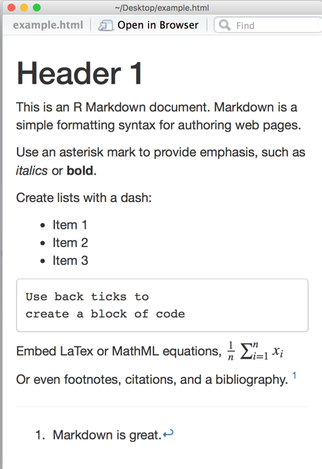
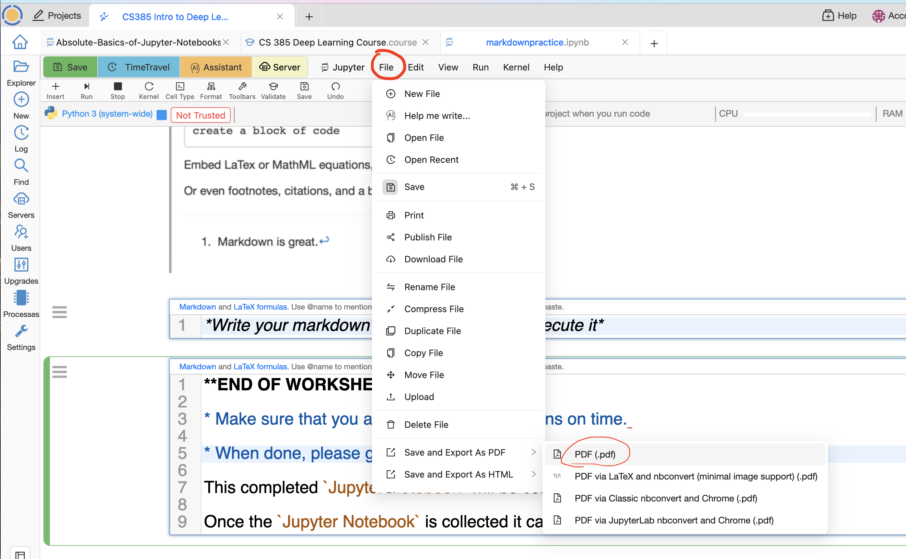

Markdown Practice
NOTE: This is a an active lesson. You are supposed to write your answers to questions on this Jupyter Notebook.
This folder containing this notebook and any related material will be collected at midnight of the due date. The folder will remain in your project, but a copy will be made for me. I will grade your work from tht copy.
This means that changes made to the notebook and or folder after the deadline are NOT going to be reflected in my copy, nor in your grade.
Introduction
This cell is written in Markdown.
If you want to see the code for Markdown on this cell, place your mouse over the cell and double click. If you want to see again the execution of this Markdown code, run the cell using the keys: shift return.
a good list of the most important commands in Markdown can be found here.
Below we give you some examples of Markdown commands. Study these examples with care. Don't be afraid to change the code, and modify it.
You will be working in this notebook, and at the end of the activities, you will be creating a pdf version of it in the folder that contains this notebook.
Headers in Markdown
We use the key "#" to get the different headers. For example, to get this header:
An H3 header
We type the following Markdown code in this cell:
The most important headers are limited by one #. Those are the H1 headers.
The next most important headers are limited by two #. Those are the H2 headers.
The next most important headers are the H3 headers.
Numbered Lists
Here's a numbered list:
first item
second item
third item
To obtain this list we type the following Markdown code:
More Complicated Lists
Double clickk on this cell to see the Markdown code for this!!
An example of a nested list:
First, get these ingredients:
carrots
celery
lentils
Boil some water.
Dump everything in the pot and follow this algorithm:
Do not bump wooden spoon or it will fall.
Links
Here's a link to a website.
Here is a list to a local doc.
{kind=link}
And here is a link to a section heading in the current doc.
Tables
Colons can be used to align columns.
| Tables | Are | Cool |
|---|---|---|
| col 3 is | right-aligned | $1600 |
| col 2 is | centered | $12 |
| zebra stripes | are neat | $1 |
There must be at least 3 dashes separating each header cell.
The outer pipes (|) are optional, and you don't need to make the raw Markdown line up prettily.
| Markdown | Less | Pretty |
|---|---|---|
| Still | renders | nicely |
| 1 | 2 | 3 |
A horizontal rule is created with 3 asterisks as below:
Definitions as Lists
Here's a definition list:
Apples : Good for making applesauce.
Oranges : Citrus!
Tomatoes : There's no "e" in tomatoe.
Again, text is indented 4 spaces. (Put a blank line between each term and its definition to spread things out more.)
Images
Images can be specified like so:
NOTE: The file that contains the image must be located in the same directory as your Jupyter Notebook from which you are inserting the image, otherwise you will get an error. For example, the following insertion command for an image fails because the file bird.jpg is not located in the same directory as this notebook file:

Math Symbols
Math symbols in markdown are imported from the LaTeX language.
One can work with math symbols inline (in the middle of text) or in its exclusive space (display math).
Inline math equation: .
Display math should get its own line like so:
One can get beautiful math expressions such as:
Note that you can backslash-escape any punctuation characters which you wish to be displayed literally, ex.: .
There are lots of math symbols that can be used in Markdown. Here is a good cheatsheet on these symbols.
Exercise
In the cell below, formatted for Markdown code, write Markdown code that will generate the following text:

Header 1
This is an R Markdown document. Markdown is a simple formatting syntax for authoring web pages.
Use and asterisk to provide emphasis such as italics or bold
Create lists with a dash:
Item 1
Item 2
Item 3
Embed LaTex or MathML equations,
Or even footnotes, citations, and a bibliography. 1
: Markdown is great.
END OF WORKSHEET
Make sure that you answered all the questions.
When done, please go to the
Fileoption for Cocalc and select export as a pdf:

RECALL: This completed Jupyter Notebook Assigment will be collected and graded.
Once the Jupyter Notebook Assigment is collected it can not be modified.